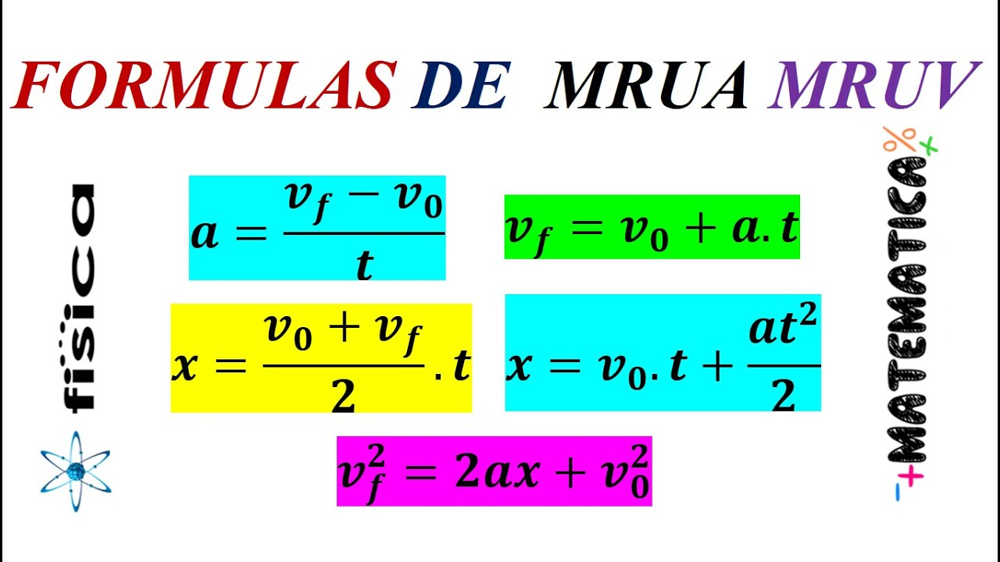
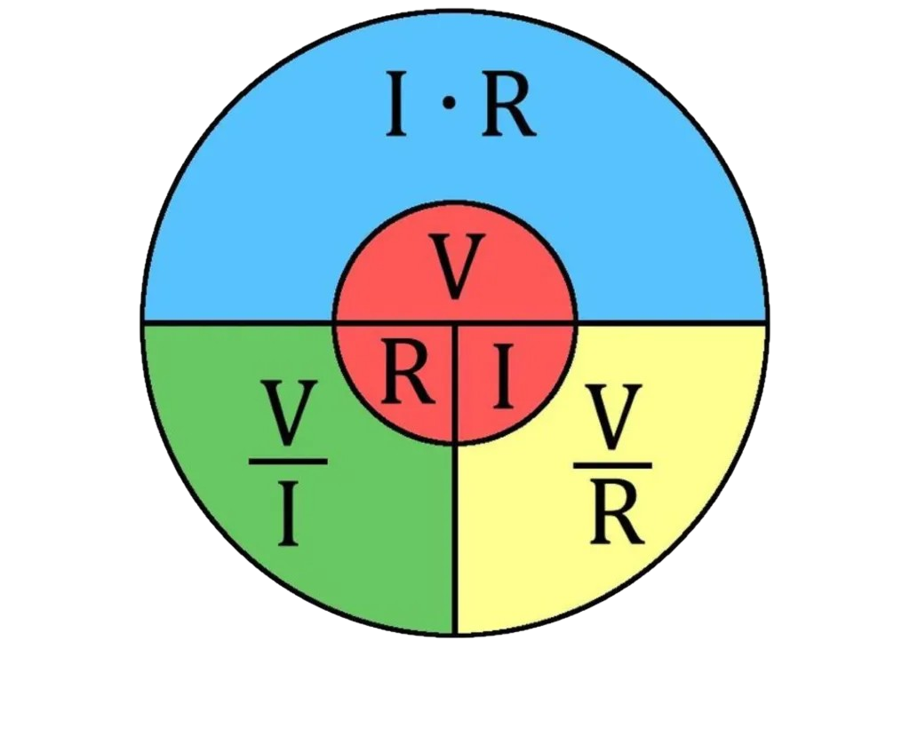

El MRU es un tipo de movimiento en el que un objeto se desplaza en línea recta y mantiene una velocidad constante, es decir, no acelera ni desacelera. En este tipo de movimiento, el objeto recorre distancias iguales en tiempos iguales.
MRUA
Es un tipo de movimiento en el que un objeto se desplaza en línea recta y su velocidad cambia de forma constante con el tiempo, es decir, tiene una aceleración constante.

OHM
Ohm realizó experimentos conectando distintos materiales a una fuente de electricidad, y midió cómo cambiaba la corriente eléctrica cuando modificaba el voltaje. Así descubrió que:
La corriente que circula por un conductor es directamente proporcional al
voltaje e inversamente proporcional a la resistencia.
La corriente que circula por un conductor es directamente proporcional al
voltaje e inversamente proporcional a la resistencia.

NEWTON
Las tres leyes de Newton explican cómo se mueven los objetos y cómo actúan las fuerzas sobre ellos. La primera ley, llamada ley de la inercia, dice que un objeto seguirá en reposo o en movimiento recto y constante si ninguna fuerza actúa sobre él. La segunda ley establece que la fuerza que se aplica a un objeto es igual a su masa por su aceleración (F = m × a), lo que significa que a mayor masa o aceleración, se necesita más fuerza. La tercera ley dice que por cada acción siempre hay una reacción igual y contraria, es decir, si empujas algo, ese algo también te empuja a ti con la misma fuerza pero en sentido contrario. Estas leyes son fundamentales para entender el movimiento en la física.